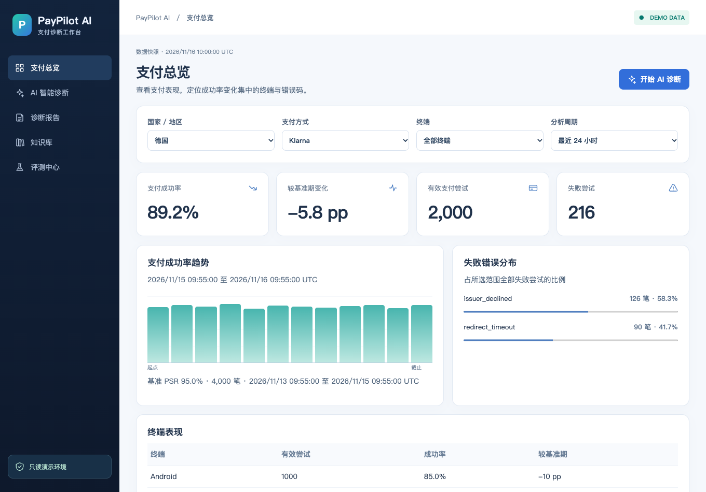
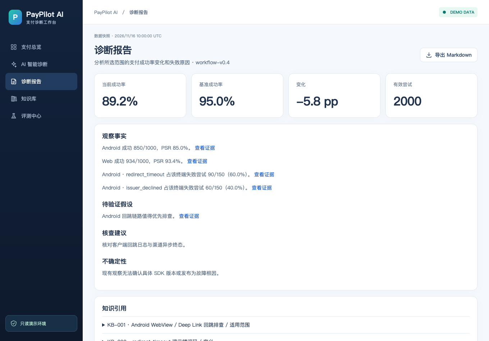

PayPilot AI · 产品与工程案例
AI 产品经理作品集 · 2026.11 · DEMOPayPilot AI
跨境支付成功率诊断。从一次成功率下降，追溯至支付尝试、客户端观测和可定位的知识出处。
用户任务支付成功率为何下降？
分析师需要确认统计范围，找到失败集中的终端，核查错误码含义，再给出可以验证的排查动作。
本项目以德国 Klarna 为演示场景。用户需求与效率收益仍需由实际研究验证。
指标设计同一口径复算两段样本
| 窗口 | 成功 / 有效尝试 | PSR |
|---|
| 当前 24 小时 | 1,784 / 2,000 | 89.2% |
| 前两个等宽窗口合并 | 3,800 / 4,000 | 95.0% |
变化 −5.8 个百分点。成功与失败按成熟终态的时间归组，待决与取消单独显示。
产品流程从筛选条件进入诊断
支付总览 → 任务时间线 → 证据报告 → 追问与反馈
筛选保存在 URL，刷新可重新读取同一范围。缺少地区或支付方式时进入澄清。网络重连后从数据库读取当前运行的事件。

工程决策六个只读工具
指标、周期比较、维度下钻、错误分布、发布事件和知识检索共用一个工具注册表。模型可解析语义；执行器检查角色、参数与运行状态。
每次工具执行都留下输入摘要、耗时和证据 ID。查询支付事实与写入诊断轨迹使用独立的数据库角色。
诊断证据Android 的回跳线索
| 终端 | 成功 / 有效尝试 | 失败 |
|---|
| Android | 850 / 1,000 | 150 |
| Web | 934 / 1,000 | 66 |
Android 失败中 90 / 150 为归一化演示码 redirect_timeout。可优先核对 Deep Link、WebView 回调和服务端终态，SDK 版本的因果关系待验证。
可信报告从结论打开来源
观察、原因假设、核查动作与不确定性分别呈现。点击来源可看到窗口、失败分母、工具结果和原始知识段落。校验器核对数值、运行归属和知识引用。
用户追问版本发布后，新 run 关联上一次运行，原报告保留。对缺少知识或样本的任务，界面呈现证据不足。

验证与迭代同一份开发集复测
首次检索测试发现，“分母”只出现在目标文档的段落标题中。候选版将段落标题纳入检索。修复后该回归通过，两个版本在 80 个开发样本上的自动评分均为 80/80。
20 条分层留出样本在规则模式下通过 20 条。39 项后端测试与 14 项浏览器测试覆盖关键流程。
限制与成本评测的适用范围
数据集由 30,000 次合成尝试与 5 份自编文档组成。规则模式上，52 个开发集多工具任务的本机 ASGI P95 为 0.0565 秒。
外部模型质量、费用、人工引用支持率和用户节省的时间均待实测。人工对照实验已定义六个任务与交叉顺序。
交付复现这次诊断
打开工作台，选择德国、Klarna、最近 24 小时，生成报告后展开错误分布和知识引用。随后追问版本关联，检查新旧报告与反馈。
本地工作台 验收记录 演示脚本